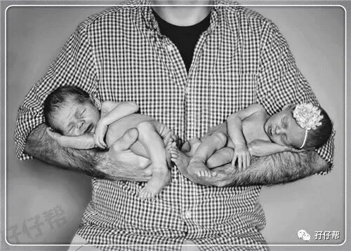
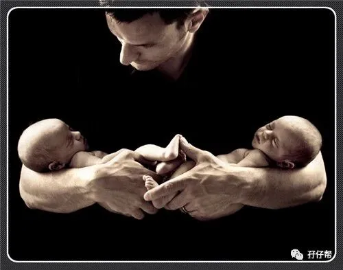
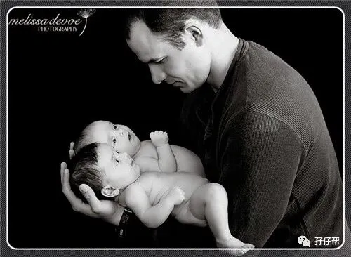
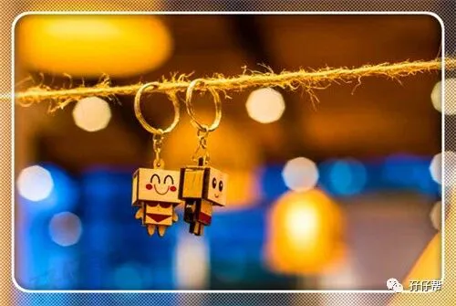
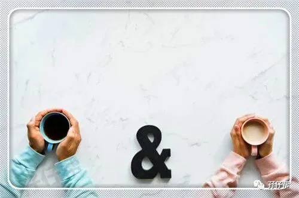
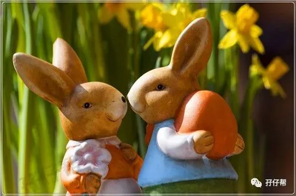
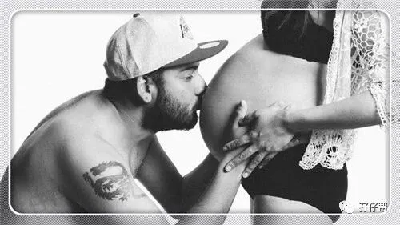
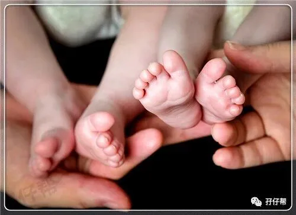

孖仔帮
与您分享双胞胎育儿路上的囧人囧事
点击蓝字
关注我们
文|圆圈妈
01
在孖仔帮孕期群，有准妈妈管双胞胎准爸爸叫队友，起初我对这个名词有点莫名其妙，后来恍然大悟。
的确，在双胞胎育儿道路上，一个人孤军奋战肯定是不行的，需要一个队友。毕竟没有那个队友的通力合作，哪来的两个崽！
而且，这个队友可不仅仅是贡献一个小蝌蚪那么简单，其重要性将贯穿整个孕育过程。
这篇文章灵感来源于一个很有意思的双胞胎准爸爸，他的媳妇正处于早孕期，每天都狂吐不已。他爱莫能助，想去孕期群学点经验帮助媳妇。
我为这样的真男人点赞。无奈，孕期群仅限双胞胎妈妈加入，我只好婉拒他了。
讲真，我被这样贴心的宝爸感动了，忍不住呐喊：“为什么好男人都是别人家的老公啊！”
很想采访下双胞胎准爸爸，当你知道10个月之后，你马上有一个响当当的身份---爸爸，是不是特别激动兴奋。
可别忘了，唐三藏西天取经路上多亏孙悟空这个队友专门负责打怪兽，在这漫漫孕育之路，作为双胞胎准妈妈的唯一队友，你需要点生存指南才能活着出来喜当爹。
02
今天来聊聊双胞胎准爸爸，在准妈妈孕育期间，需要哪些生存技巧。
先来说说圆圈妈的队友---圆圈爸。
总的来说，圆圈爸是个合格的队友，若100分算满分，他可以拿70分。
这个25岁就当爹的男人，居然坐火箭般一口气升级成两个孩子的爹，没有点绝技实在难等大雅之堂啊。
从来不下厨的他，冒着把厨房烧掉的风险，包揽了所有家务活。
每月一次的产检，逢场必到，哪怕克扣工资也在所不惜。
担心打呼噜吵到我们娘三睡觉，自愿打地铺。
为了赚奶粉钱，与对面腾讯大厦的员工一样对着群魔乱舞的代码，通宵达旦，死磕到底…
虽然他做的不够完美，看在小蝌蚪的份上，圆圈爸应该值70分！
掐指一算，他真的做到极致了，他自己还是个未成熟的大男孩，整天对着一个上一秒母性大发，下一秒就哭得悲天悯人的孕妇，他的诚惶诚恐，笨拙憨态，显得无可厚非了…
如果我有10块钱，只愿意给你1块钱，如果我只有1块钱，但愿意给你9分钱，
圆圈爸就是那个愿意给我9分钱，只给自己留1分钱的人。
我知足了。
以至于，我的整个孕期都心情很美丽，除了我自身因素自寻烦恼，他简直没有地方让我挑刺。因为他深知，只要我开心了，世界才安静了。
可以对不起全天下，就是不能对不起孕期中的媳妇。
可以与世界为敌，就是不能与双胞胎孕妇为敌。
啊，多么痛的领悟。双胞胎爸爸，你GET 到重点了吗？
03
在此，圆圈妈还有些温馨小贴士要分享给准爸爸，也许你的媳妇体恤你的苦不敢跟你说，也许怕说出来变味了。
但是作为一个过来人，我毛遂自荐为双胞胎准妈妈代言…希望各位双胞胎准爸爸尽量做到以下几点。
孕早期的她，因为双胞胎妊娠的缘故，早孕反应尤其剧烈。千万不要在她吐得难受，扑簌簌流着泪找你诉苦的时候，嫌弃她娇气，嫌弃她矫情，你这绝对是作死的节奏。
你要是实在词穷，那就用你宽大的胸膛给她一个贴心的拥抱，让她知道并不是只有她一个人在战斗。 须知道，你一个简单充满爱意的拥抱就能让她马上满血复活…
孕中期的她，再也不是病恹恹的女人了，随时都会性情大变，河东狮孔。别慌，这是激素使然，你可爱美丽的妻子仍在。
不管再忙再累，陪媳妇出去走走聊聊吧。说说你的心里话，谈谈你初为人父的紧张和焦虑。
哪怕什么事情都不做，什么话都不说，小两口子互相挽着靠着，憧憬下一家四口的未来，这对准妈咪来说，是心灵深处最放松，最享受的时刻了。
女人没那么复杂，只需要一个对未来爱的承诺即可。
孕后期的她，身体会很重，睡不好，吃不好。宝爸可以做的就是细心+耐心+贴心…
给频繁夜尿的她留一盏昏黄的小桔灯，给心情忧郁的她讲个冷笑话，给失眠惊醒的她一个及时的安抚，给全身酸疼的她贴心的按摩…
小小的动作，满满的爱意..让她时刻被爱包围着，温暖着，让她像只幸福的小猪，笑呵呵地迎接每天的食物和阳光…
04
除此之外，以下细节也要做到：
每次产检，保证必到
虽然准妈妈嘴上说自己去就行，其实这么隆重的场合，第一次听胎心，第一次照B超，你这个“肇事者”居然不在，准妈妈心里难免会有疙瘩的！
为了避免日后落下话柄，请双胞胎准爸爸每次产检必须本人亲自到场在人，任何人不能代劳，包括亲妈也不例外。
不要问为什么…女人的心思复杂起来，连爱因斯坦都表示爱莫能助。
每天都要坚持给三个小宝贝打招呼
那三个宝贝就是准妈妈和两个胎宝宝，且风雨无阻，雷打不动。随时随地满足准妈妈合理和“不合理”的要求。
在准妈妈准备性情大变之前，用尽所有一切糖衣炮弹，平息她自己也无法控制的情绪。
换而言之，情绪回收站非你莫属。
有些小两口追求生活中的仪式感，那隆重点吧。早晨三个啵，中午三个啵，晚上再来三个啵。
包揽下所有家务活，这是必须的
不管是你亲自做or请保姆，还是牺牲下自己的亲妈,总之不能在这个节骨眼上委屈了准妈妈，从实际行动让她感受到你对她们娘三的高度重视。
除非准妈妈是个美食达人，那恭喜你，你距离五百万大奖又近了一步…
主动揽下囤货这个艰巨的任务
可能这个差事会被准妈妈抢走，因为每一个准妈咪都有“筑巢控”的本性，给孩子们准备小衣服小帽子，是一件很幸福的事情。
如果可以，请加入到准妈妈的囤货计划中，小两口一起准备宝宝用品,。大家有商有量，分工合作，其乐融融。
这样可以转移准妈妈的注意力，缓解孕后期的不适感，还能预防产前忧郁症。
胎动的时候，要很热情很上心地扑过去观看
一脸羡慕妒忌恨地对准妈妈说：“我好妒忌你，我也想要被孩子们拳打脚踢！”
不要小看这种羡慕嫉妒恨，“人无我有”那种优越感，适合所有生物，双胞胎准妈妈也不例外。
好过你说N遍的，“老婆大人，您受苦了！”而且，肉麻了别人，恶心了自己。（难道不是吗？哈哈…）
05
最后，圆圈妈的心里话：
孕期中的她除了是你媳妇，也是两个孩子的妈妈。
因为母爱使然，她的担心焦虑并不是空穴来风，无理取闹，只因为她太在乎妈妈这个角色，太担心委屈了里面的孩子们。
所以，看在卵子+子宫+两胎宝宝的份上，请无底线地原谅她吧！
我经常跟偶尔松懈怠慢的圆圈爸宣战：“如果可以换，我宁愿是男人，换我鞍前马后，肝脑涂地，我也不愿意承受十月怀胎那种煎熬。”
这一招，管用…嘿嘿嘿…
总结下，细心，耐心，贴心，信心，都有了吧？
好！那恭喜你，一般问题不大了。等着喜当爹，迎接生命中最激动人心的时刻到来吧！
记得给圆圈妈报喜哦！加油ヾ(◍°∇°◍)ﾉﾞ
1
END
1
本文系圆圈妈sgguy-com原创，来源于孖仔帮，专注双胞胎孕期育儿经验分享，著作权归孖仔帮所有。
长按识别二维码关注我们
我猜你肯定喜欢看下面的文章，对不对嘛？关注孖仔帮，回复下方文章前面的数字编号即可阅读。
105:同卵双胞胎的天敌--双胞胎输血综合征
201:双胞胎与唐氏筛查---美丽的邂逅
212:原来双胎妈妈可以这样数胎动，好简单啊
215:双胎子宫日记系列|（下）你看不看？双胞胎妈妈直播剖腹产全过程
302:喂养干货||如何训练双胞胎宝宝睡整夜觉
306: 真人示范！双胞胎妈妈高难度喂母乳技巧
404:双胞胎家庭生存技巧01：舍不得孩子套不住狼，新生入园开学季必备
604:那些又俗气又搞笑的双胞胎姓名大全【第一季】
711:想要做一个四海八荒的双胎妈妈，你需要这些工具
714:那个每天晚上9点钟才到家的双胎妈妈，失业了…
近日发现有些平台未经允许转载了圆圈妈的文章，在此声明下：
若喜欢圆圈妈的文章，无条件欢迎大家分享转发到朋友圈。
如需转载至公众号请联系圆圈妈（微信sgguy-com）授权，或扫以下微信二维码。
各位双胎妈妈，更多孖仔帮原创育儿文章请猛戳 "阅读原文" ，或者直接上圆圈妈的个人博客，大把双胎孕期育儿心得经验分享。
阅读原文：
https://www.sgguy.com/twinsbang









